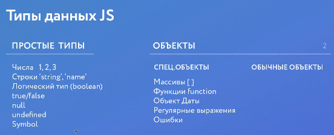
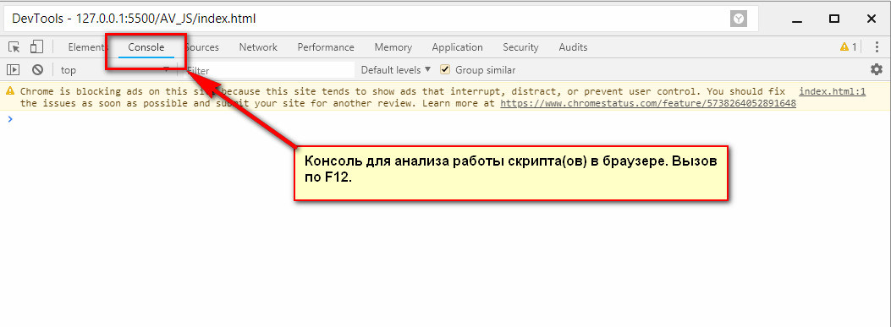

Урок 1
Теория


Домашняя работа
- Создать html документ, js файл и подключить его к странице
- Написать скрипт, в котором:
- Спросить у пользователя 2 раза интересующий вас вопрос (развернутый ответ)
- Записать ответы в переменные
- Вывести ответы в консоль
- В конце показать модальное окно с благодарностью
- Загрузить архив в формате .ZIP с выполненным дз на облачный сервис (Яндекс.Диск, Google Drive или DropBox)